TC-ACC-01 P3 ล้ม
การเข้าถึง · สุ่มด้วยคีย์บอร์ดแล้ว focus ไม่หลุดไป body
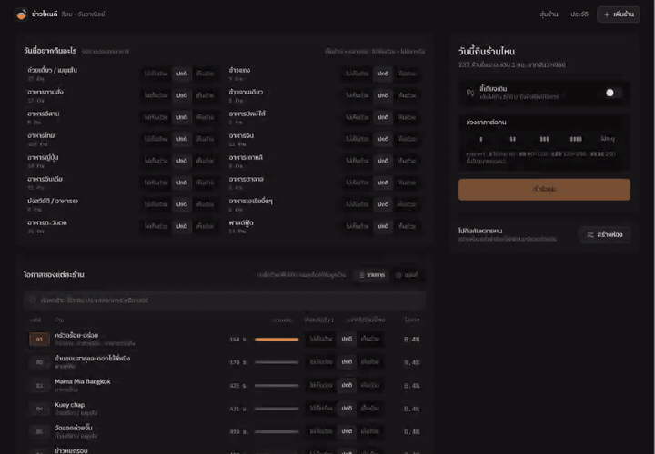
TC-ADD-01 P1 ผ่าน
เพิ่มร้านเอง · เพิ่มร้านจากเมนู แล้วขึ้นบนกระดานทันที
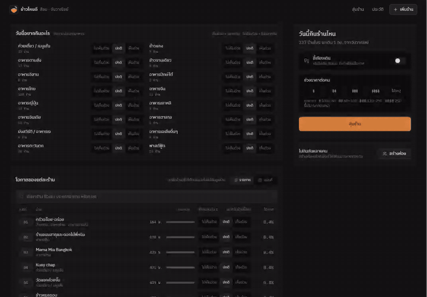
TC-ADD-02 P2 ผ่าน
เพิ่มร้านเอง · ปักหมุดด้วยการกดบนแผนที่
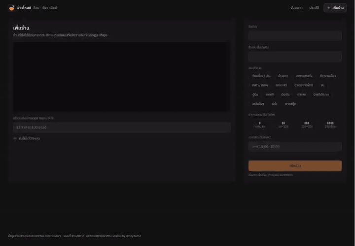
TC-ADD-03 P2 ผ่าน
เพิ่มร้านเอง · วางลิงก์ Google Maps แล้วอ่านตำแหน่งได้
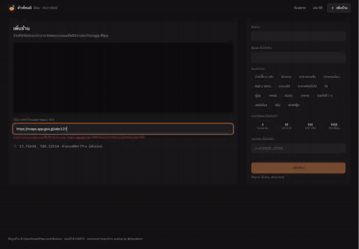
TC-ADD-04 P2 ผ่าน
เพิ่มร้านเอง · ข้อมูลไม่ครบ กดเพิ่มร้านไม่ได้
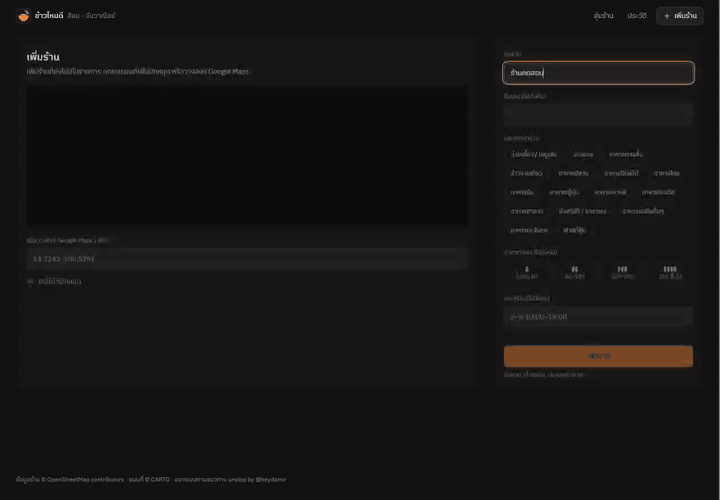
TC-ADD-05 P2 ผ่าน
เพิ่มร้านเอง · ร้านที่ไกลเกิน 2 กม. เพิ่มไม่ได้
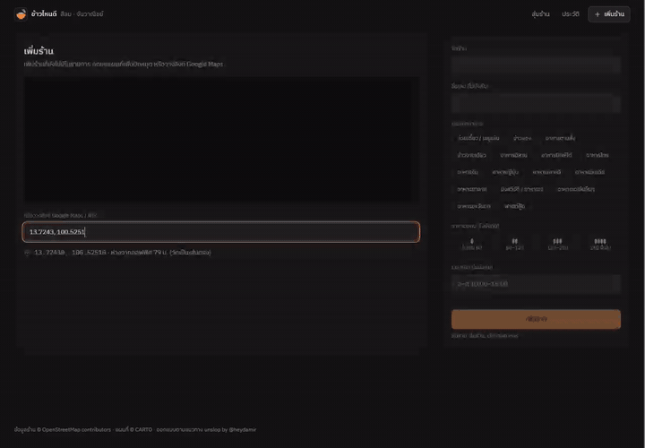
TC-ADD-06 P2 ผ่าน
เพิ่มร้านเอง · ร้านที่เพิ่มใกล้ออฟฟิศอยู่ในระยะโหมดขี้เกียจเดิน
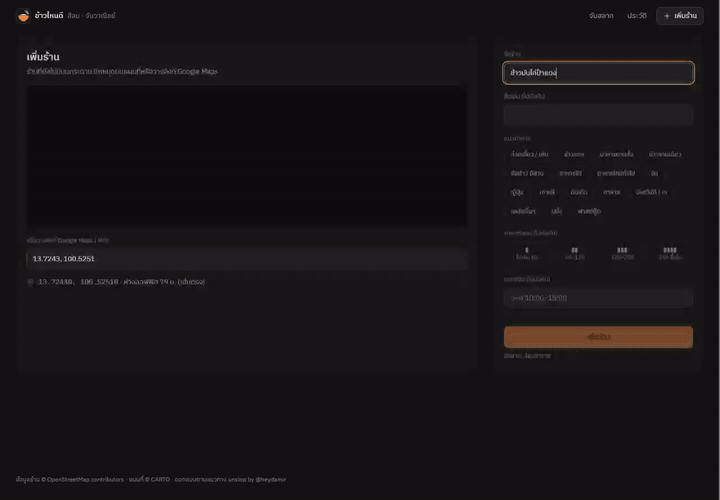
TC-ADD-07 P1 ผ่าน
เพิ่มร้านเอง · ลบได้เฉพาะร้านที่เพิ่มเอง
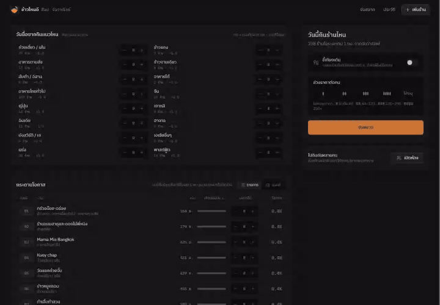
TC-ADD-08 P2 ผ่าน
เพิ่มร้านเอง · API เพิ่มร้านตรวจข้อมูลไม่ถูกต้อง ได้ 400
ไม่มี GIF: test นี้เรียก API โดยไม่เปิดหน้าเว็บ
TC-ADD-09 P2 ผ่าน
เพิ่มร้านเอง · คนอื่นเห็นร้านที่เพิ่มทันที (realtime)
TC-ADD-10 P1 ล้ม
เพิ่มร้านเอง · ลบร้านที่เพิ่มเองแล้วเพิ่มใหม่ เลขไม่ซ้ำ ไม่รับข้อมูลเก่า ประวัติไม่เปลี่ยน
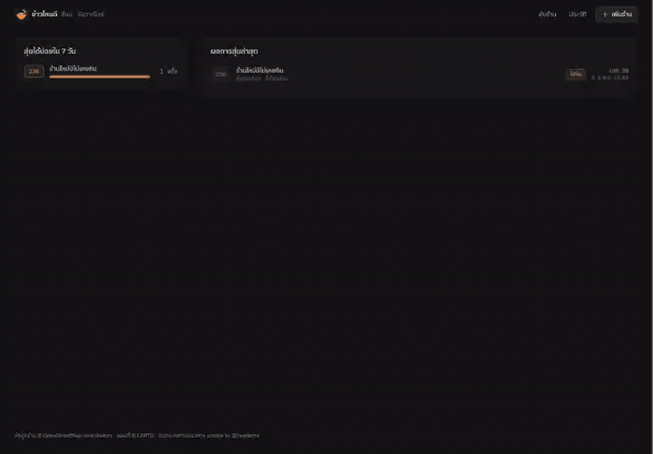
TC-ADD-11 P3 ล้ม
เพิ่มร้านเอง · ชื่อยาวลงท้ายอีโมจิไม่ถูกตัดครึ่งตัว
ไม่มี GIF: test นี้เรียก API โดยไม่เปิดหน้าเว็บ
TC-ADD-12 P3 ล้ม
เพิ่มร้านเอง · วางลิงก์ /maps/dir/ และข้อความที่มี % แล้วอ่านตำแหน่งถูก
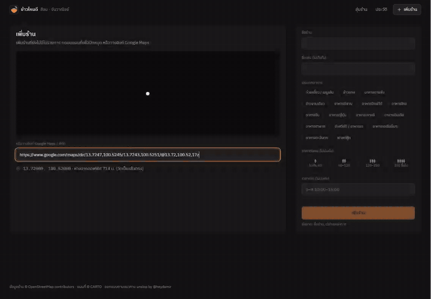
TC-API-01 P2 ผ่าน
API · โหวตประเภทอาหารที่ไม่มีอยู่ ได้ 400
ไม่มี GIF: test นี้เรียก API โดยไม่เปิดหน้าเว็บ
TC-API-02 P2 ผ่าน
API · คนที่ไม่ได้อยู่ในห้องโหวตไม่ได้
ไม่มี GIF: test นี้เรียก API โดยไม่เปิดหน้าเว็บ
TC-API-03 P2 ผ่าน
API · แก้ข้อมูลร้านด้วยค่าที่ไม่ถูกต้อง ได้ 400
ไม่มี GIF: test นี้เรียก API โดยไม่เปิดหน้าเว็บ
TC-API-04 P2 ผ่าน
API · ไม่มีร้านให้สุ่ม ได้ 409
ไม่มี GIF: test นี้เรียก API โดยไม่เปิดหน้าเว็บ
TC-API-05 P2 ผ่าน
API · realtime stream ส่งสถานะห้องทันทีที่เชื่อมต่อ
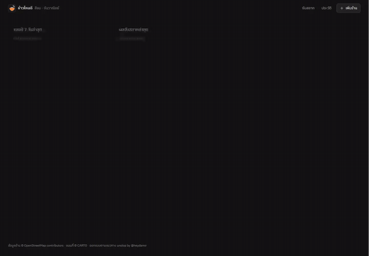
TC-API-06 P2 ผ่าน
API · โหวตร้านที่ไม่มีอยู่ ได้ 400
ไม่มี GIF: test นี้เรียก API โดยไม่เปิดหน้าเว็บ
TC-API-07 P3 ล้ม
API · /api/draw รับ input ผิด ได้ 400 และไม่บันทึกผล
ไม่มี GIF: test นี้เรียก API โดยไม่เปิดหน้าเว็บ
TC-API-08 P3 ล้ม
API · ค่าผิดชนิด (null, "", true, "0x2", [2]) ได้ 400
ไม่มี GIF: test นี้เรียก API โดยไม่เปิดหน้าเว็บ
TC-API-09 P3 ล้ม
API · id ใน path แปลก (0x10, 1e1) ได้ 400
ไม่มี GIF: test นี้เรียก API โดยไม่เปิดหน้าเว็บ
TC-API-10 P3 ล้ม
API · POST text/plain จาก origin อื่นถูกปฏิเสธ
ไม่มี GIF: test นี้เรียก API โดยไม่เปิดหน้าเว็บ
TC-API-11 P3 ล้ม
API · GET /api/restaurants ไม่เปิดเผย rater id ของคนอื่น
ไม่มี GIF: test นี้เรียก API โดยไม่เปิดหน้าเว็บ
TC-CAT-01 P1 ผ่าน
จัดการประเภทอาหาร · เพิ่มประเภทอาหารใหม่ แล้วใช้ได้ทันที
TC-CAT-02 P2 ผ่าน
จัดการประเภทอาหาร · แก้ชื่อประเภทอาหาร
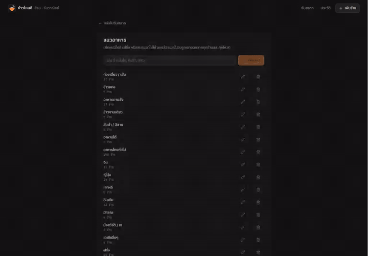
TC-CAT-03 P1 ผ่าน
จัดการประเภทอาหาร · ลบประเภทอาหาร เอาออกจากทุกร้าน
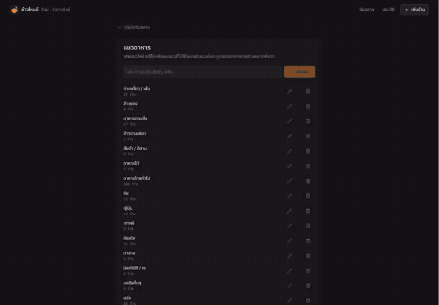
TC-CAT-04 P3 ผ่าน
จัดการประเภทอาหาร · ชื่อว่างหรือซ้ำ เพิ่มไม่ได้
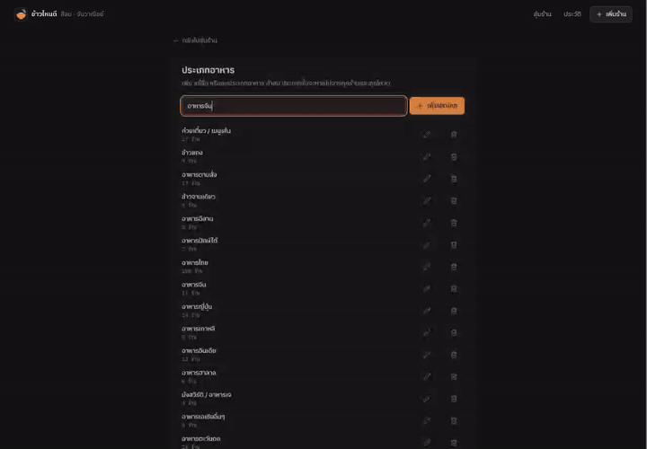
TC-CAT-05 P2 ผ่าน
จัดการประเภทอาหาร · แนวใหม่ใช้โหวตได้
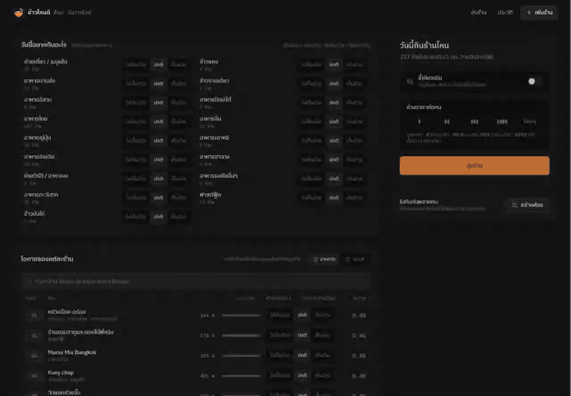
TC-CAT-06 P2 ล้ม
จัดการประเภทอาหาร · ลบประเภทที่เป็นประเภทเดียวของร้าน ต้องถูกกันหรือย้ายร้าน
ไม่มี GIF: test นี้เรียก API โดยไม่เปิดหน้าเว็บ
TC-DRAW-01 P1 ผ่าน
สุ่มร้าน · สุ่มร้านแล้วได้การ์ดผลพร้อมลิงก์ Google Maps
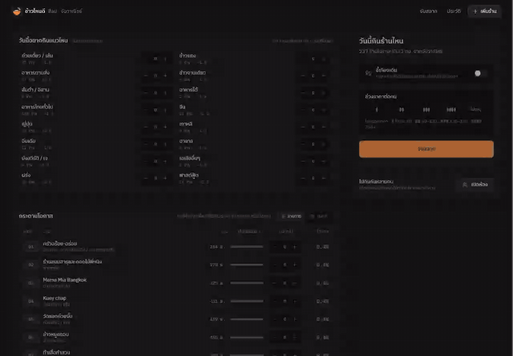
TC-DRAW-02 P1 ผ่าน
สุ่มร้าน · ผลการสุ่มเป็นไปตามโหมดขี้เกียจเดินเสมอ
ไม่มี GIF: test นี้เรียก API โดยไม่เปิดหน้าเว็บ
TC-DRAW-03 P1 ผ่าน
สุ่มร้าน · ร้านที่ไม่สุ่มไม่ถูกสุ่ม
TC-DRAW-04 P1 ผ่าน
สุ่มร้าน · กด ไปกินร้านนี้ แล้วโอกาสร้านนั้นลดลง
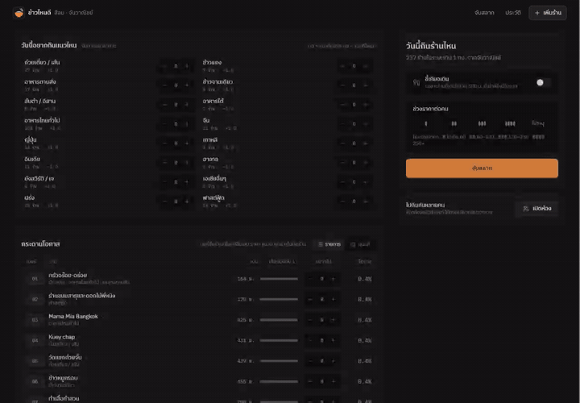
TC-DRAW-05 P2 ผ่าน
สุ่มร้าน · ยกเลิก กินแล้ว โอกาสกลับเป็นปกติ
TC-DRAW-06 P2 ผ่าน
สุ่มร้าน · กินแล้วยังถูกนับหลังรีโหลด
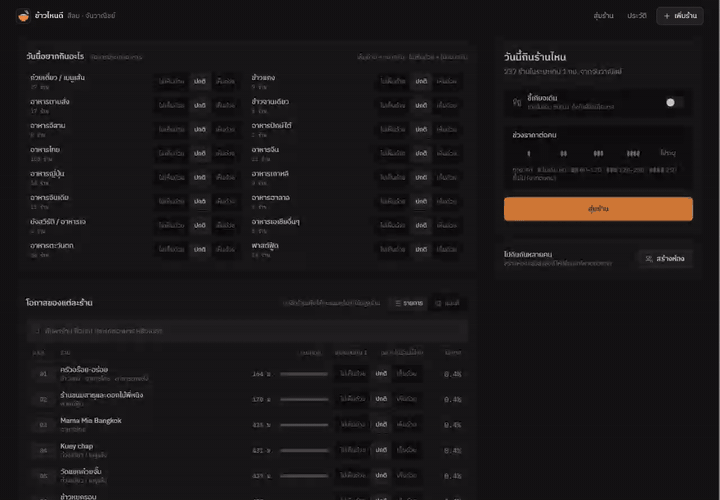
TC-DRAW-07 P2 ล้ม
สุ่มร้าน · ดับเบิลคลิก / กด Enter รัว สร้างผลสุ่มครั้งเดียว
TC-DRAW-08 P2 ล้ม
สุ่มร้าน · โทษกินแล้วยังอยู่หลังสุ่มเพิ่ม 1,000 ครั้ง
ไม่มี GIF: test นี้เรียก API โดยไม่เปิดหน้าเว็บ
TC-EDIT-01 P1 ผ่าน
แก้ข้อมูลร้าน · ตั้งชื่อเล่นร้าน แสดงแทนชื่อจริงและบันทึกลงไฟล์
TC-EDIT-02 P3 ผ่าน
แก้ข้อมูลร้าน · ลบชื่อเล่นแล้วกลับเป็นชื่อจริง
TC-EDIT-03 P1 ผ่าน
แก้ข้อมูลร้าน · ปิดร้าน แล้วกลับมาสุ่ม
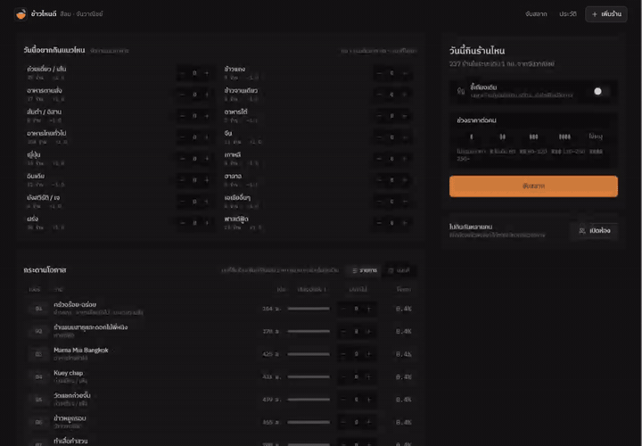
TC-EDIT-04 P2 ผ่าน
แก้ข้อมูลร้าน · แก้ประเภทอาหารของร้าน
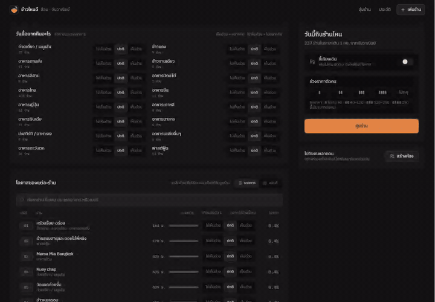
TC-EDIT-05 P3 ผ่าน
แก้ข้อมูลร้าน · ต้องเลือกประเภทอาหารอย่างน้อย 1 ประเภท
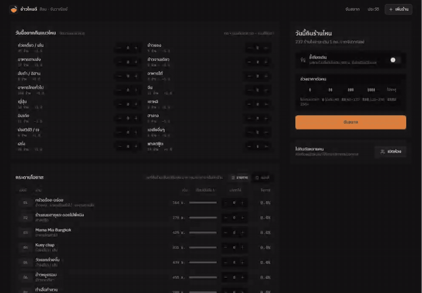
TC-EDIT-06 P2 ผ่าน
แก้ข้อมูลร้าน · ตัวคูณโอกาส ×2 ทำให้โอกาสเป็นสองเท่า
TC-EDIT-07 P2 ผ่าน
แก้ข้อมูลร้าน · ตั้งราคาร้านจากหน้าแก้ไข
TC-FLT-01 P1 ผ่าน
ตัวกรอง · ขี้เกียจเดิน เหลือเฉพาะร้านที่เดินไม่เกิน 500 ม.
TC-FLT-02 P2 ผ่าน
ตัวกรอง · กรองราคา ฿ ตอนที่ยังไม่มีร้านไหนมีราคา
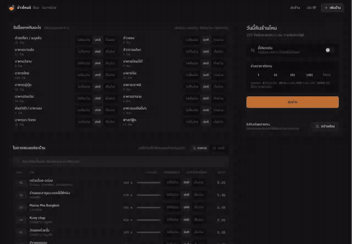
TC-FLT-03 P1 ผ่าน
ตัวกรอง · กรองราคาตามที่ตั้งไว้ให้ร้าน
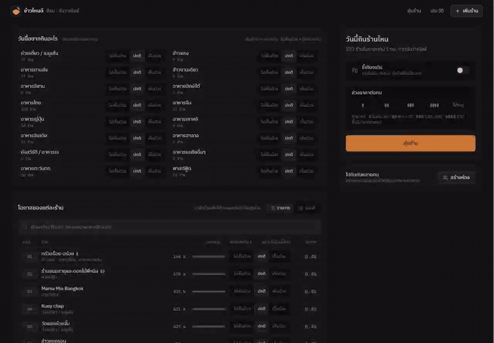
TC-FLT-04 P2 ผ่าน
ตัวกรอง · ไม่ระบุราคา คือร้านที่ยังไม่มีใครใส่ราคา
TC-FLT-05 P3 ผ่าน
ตัวกรอง · ตัวกรองยังอยู่หลังรีโหลด
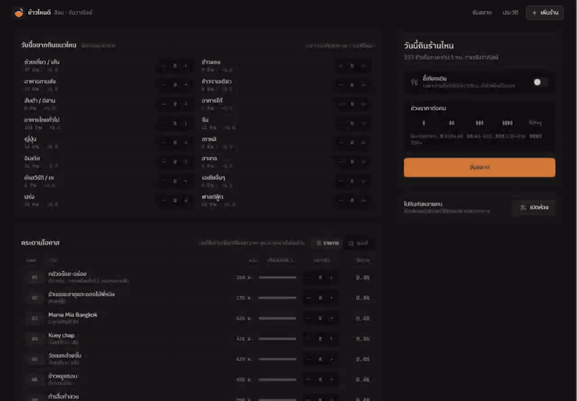
TC-FLT-06 P1 ผ่าน
ตัวกรอง · ขี้เกียจเดิน ร้านยิ่งใกล้ยิ่งมีโอกาสสูง
TC-HIST-01 P2 ผ่าน
ประวัติ · ประวัติแสดงผลการสุ่มล่าสุดและแชมป์
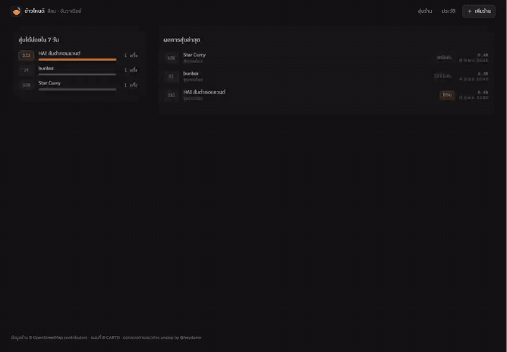
TC-HIST-02 P3 ผ่าน
ประวัติ · ยังไม่เคยสุ่ม
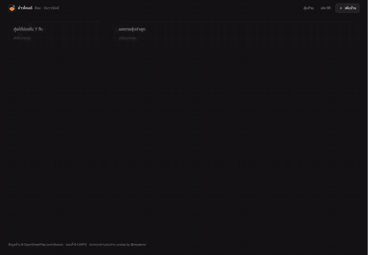
TC-HIST-03 P2 ผ่าน
ประวัติ · ทุกผลการสุ่มมีป้าย ไปกิน / ไม่ได้ไปกิน / รอยืนยัน
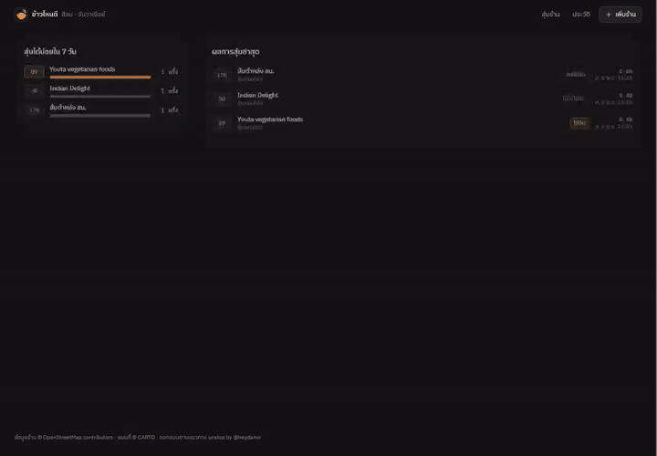
TC-HOME-01 P2 ผ่าน
หน้าแรก · หน้าแรกแสดงครบ
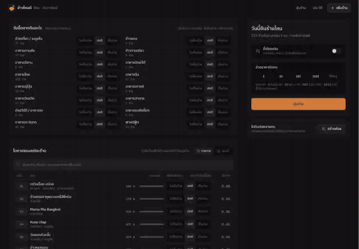
TC-HOME-02 P3 ผ่าน
หน้าแรก · แสดงร้านทั้งหมดและย่อกลับ
TC-HOME-03 P2 ผ่าน
หน้าแรก · ทุกร้านโอกาสเท่ากันเมื่อยังไม่มีใครโหวต
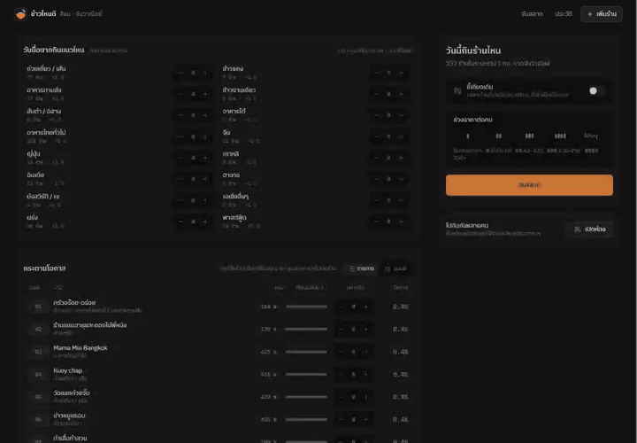
TC-HOME-04 P3 ผ่าน
หน้าแรก · เมนูประวัติพาไปหน้าประวัติ
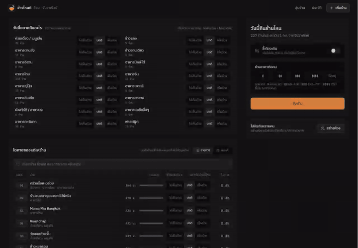
TC-HOME-05 P3 ล้ม
หน้าแรก · โหวตใน localStorage ผิดช่วง: % บนกระดาน = การ์ดผล = server
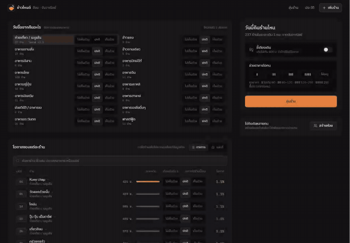
TC-MAP-01 P1 ผ่าน
แผนที่ · สลับเป็นแผนที่ เห็นหมุดทุกร้าน
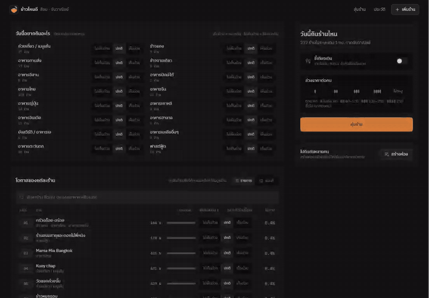
TC-MAP-02 P2 ผ่าน
แผนที่ · หมุดตามตัวกรอง ขี้เกียจเดิน
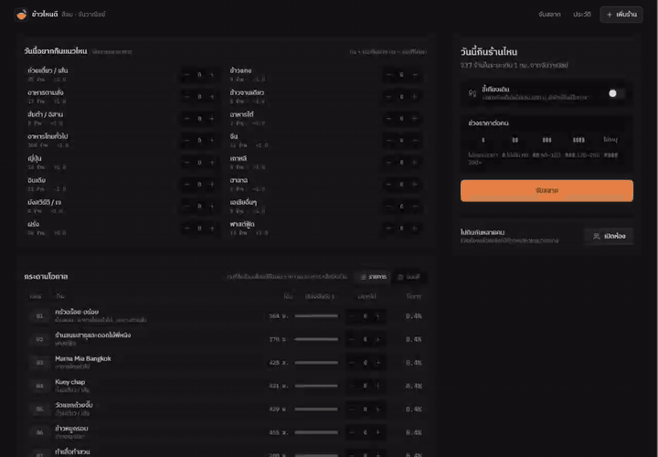
TC-MAP-03 P1 ผ่าน
แผนที่ · กดหมุดแล้วเห็นร้าน โอกาส และโหวตได้
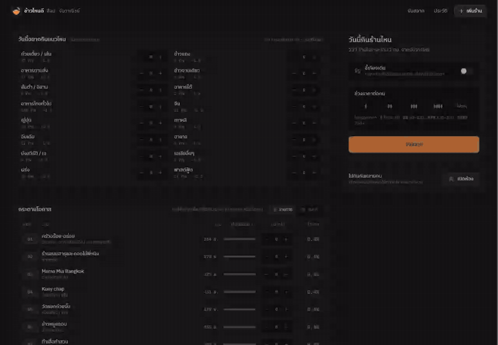
TC-MAP-04 P3 ผ่าน
แผนที่ · หมุดที่มีโอกาสสูงใหญ่กว่า
TC-MAP-05 P2 ผ่าน
แผนที่ · สุ่มบนแผนที่ หมุดร้านที่ได้เด่นขึ้น และกลับไปมุมมองรายการได้
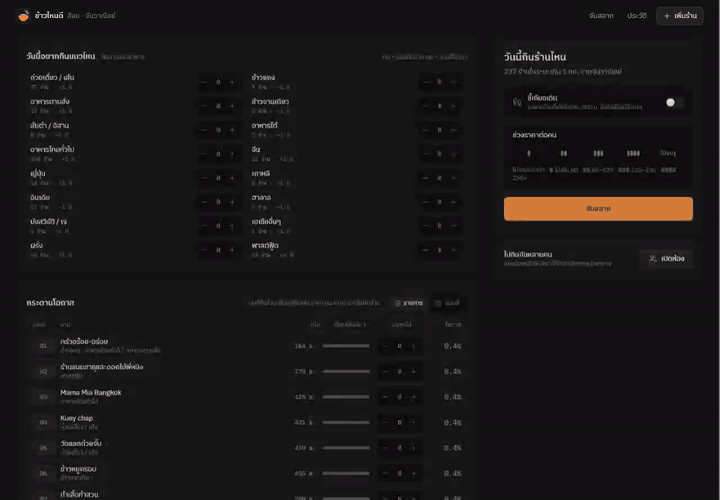
TC-MAP-06 P1 ผ่าน
แผนที่ · ชี้หมุดเห็นชื่อร้าน กดหมุดอื่นแล้วรายละเอียดด้านขวาเปลี่ยนตาม
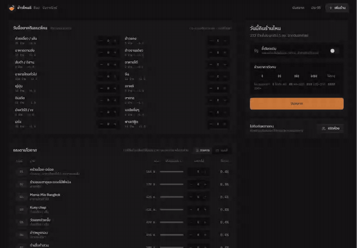
TC-MAP-07 P2 ผ่าน
แผนที่ · หมุดที่ซ้อนกัน เลือกร้านจากรายการ ร้านที่อยู่จุดเดียวกัน
TC-MAP-08 P3 ล้ม
แผนที่ · ตัวกรองไม่เหลือร้าน แผงแผนที่แสดงข้อความอธิบาย
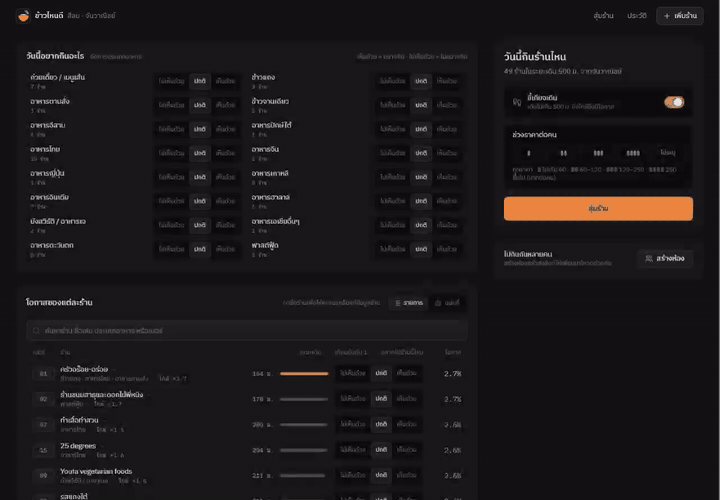
TC-MOB-01 P3 ผ่าน
มือถือ · ปุ่มสุ่มร้านอยู่บนสุด ไม่มี scroll แนวนอน
TC-MOB-02 P3 ผ่าน
มือถือ · สุ่มร้านแล้วเห็นการ์ดผลบนจอ
TC-MOB-03 P3 ล้ม
มือถือ · แผนที่บนจอ 390 px ไม่มี scroll แนวนอนแม้ชื่อร้านยาว
TC-RATE-01 P1 ผ่าน
ให้คะแนนร้าน · ให้คะแนนจากการ์ดผลการสุ่ม
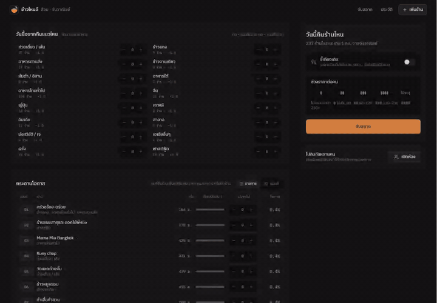
TC-RATE-02 P2 ผ่าน
ให้คะแนนร้าน · เปลี่ยนคะแนน และกดซ้ำเพื่อยกเลิก
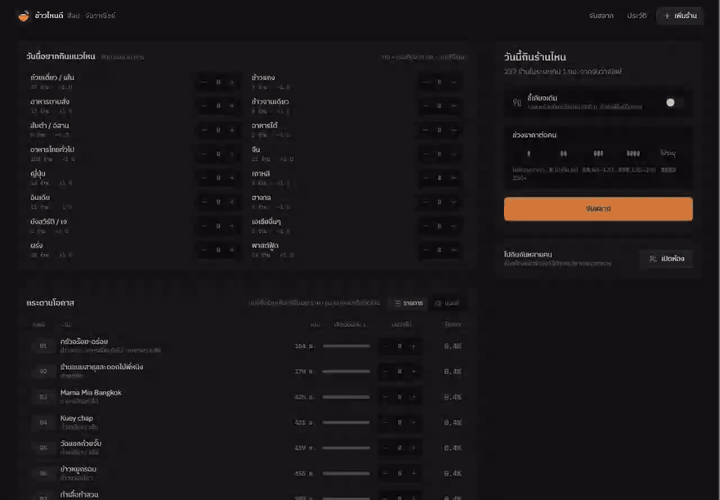
TC-RATE-03 P2 ผ่าน
ให้คะแนนร้าน · หลายคนให้คะแนน แสดงค่าเฉลี่ย
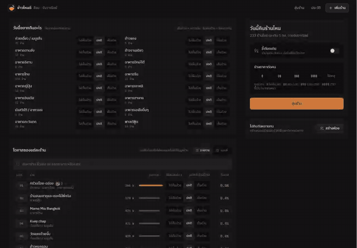
TC-RATE-04 P1 ผ่าน
ให้คะแนนร้าน · คะแนนมีผลกับโอกาสถูกสุ่ม
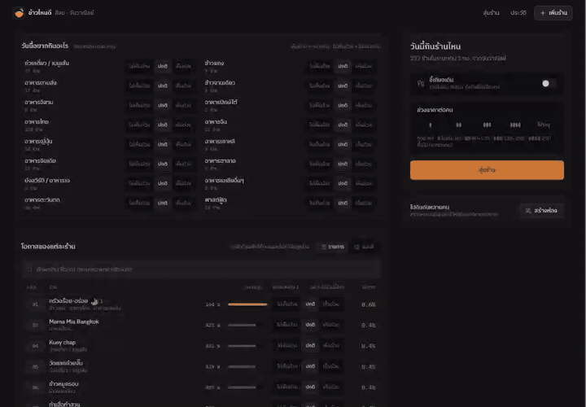
TC-RATE-05 P2 ผ่าน
ให้คะแนนร้าน · ให้คะแนนจากแผงร้านบนแผนที่
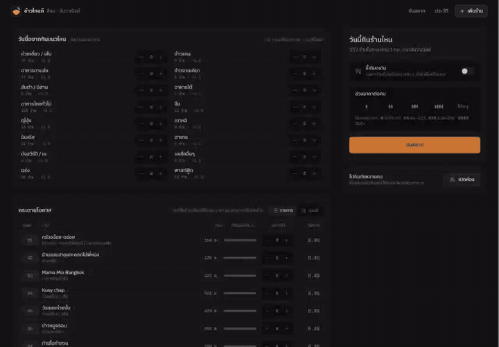
TC-RATE-06 P2 ผ่าน
ให้คะแนนร้าน · คนอื่นเห็นคะแนนทันที (realtime)

TC-RATE-07 P2 ผ่าน
ให้คะแนนร้าน · API ให้คะแนนตรวจข้อมูลไม่ถูกต้อง

TC-ROOM-01 P1 ผ่าน
ห้อง (member) · สร้างห้องแล้วต้องใส่ชื่อเล่นก่อนโหวต
TC-ROOM-02 P1 ผ่าน
ห้อง (member) · สมาชิกคนที่สองเข้าห้องผ่านลิงก์ คนแรกเห็นทันที
TC-ROOM-03 P1 ผ่าน
ห้อง (member) · โหวตของทุกคนรวมกันแบบ realtime
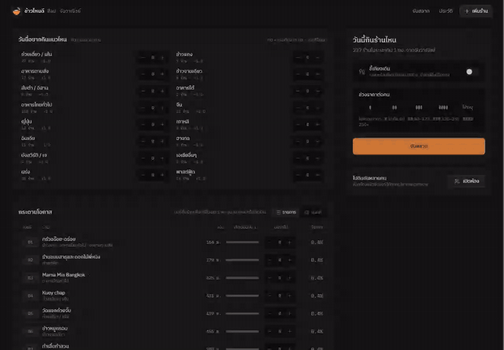
TC-ROOM-04 P2 ผ่าน
ห้อง (member) · ตัวกรองของห้องใช้ร่วมกันทุกคน
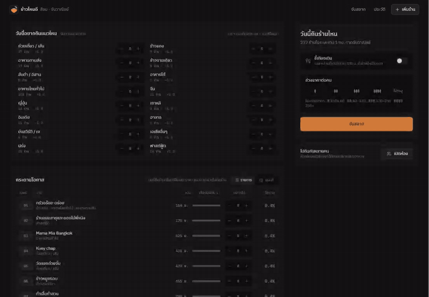
TC-ROOM-05 P1 ผ่าน
ห้อง (member) · สุ่มในห้อง ทุกคนเห็นร้านเดียวกัน
TC-ROOM-06 P2 ผ่าน
ห้อง (member) · สมาชิกเห็นการแก้ข้อมูลร้านทันที
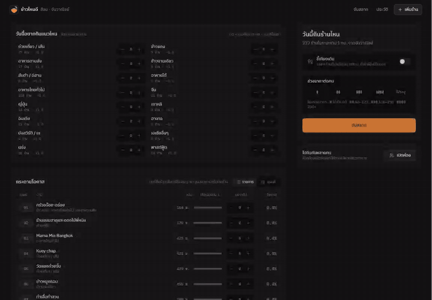
TC-ROOM-07 P3 ผ่าน
ห้อง (member) · ใช้ชื่อเล่นซ้ำในห้อง คือคนเดิม
ไม่มี GIF: test นี้เรียก API โดยไม่เปิดหน้าเว็บ
TC-ROOM-08 P3 ผ่าน
ห้อง (member) · ห้องที่ไม่มีอยู่
TC-ROOM-09 P1 ผ่าน
ห้อง (member) · สมาชิกโหวตร้านในห้องแบบ realtime
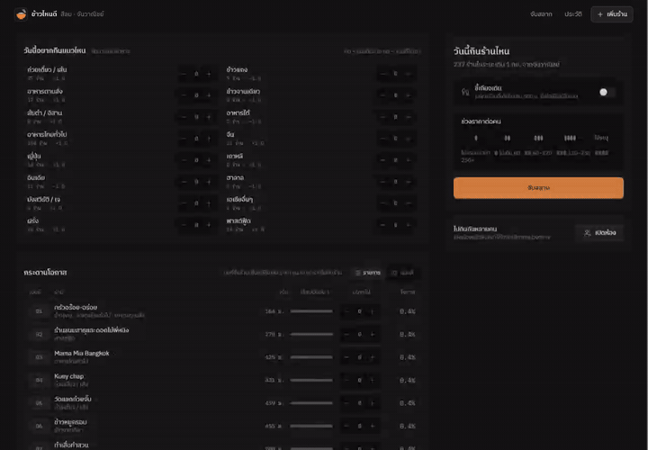
TC-ROOM-10 P1 ล้ม
ห้อง (member) · สองคนกดสุ่มพร้อมกัน ทุกจอแสดงร้านเดียวกับผลล่าสุดของห้อง
ไม่มี GIF: test นี้เรียก API โดยไม่เปิดหน้าเว็บ
TC-ROOM-11 P2 ผ่าน
ห้อง (member) · response ของโหวตที่มาช้าไม่ทับโหวตที่ใหม่กว่า
ไม่มี GIF: test นี้เรียก API โดยไม่เปิดหน้าเว็บ
TC-ROOM-12 P2 ผ่าน
ห้อง (member) · โหวตหลังห้องถูกลบ แสดงข้อความและไม่ค้างสถานะกดแล้ว
ไม่มี GIF: test นี้เรียก API โดยไม่เปิดหน้าเว็บ
TC-ROOM-13 P3 ล้ม
ห้อง (member) · เปิด /room/ZZZZ ได้ HTTP 404
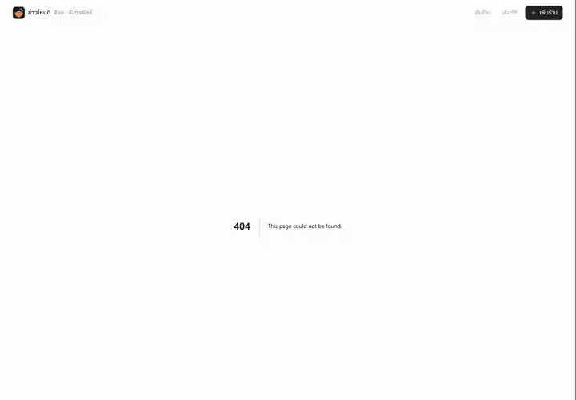
TC-ROOM-17 P2 ผ่าน
ห้อง (member) · ในห้อง คนอื่นเห็นโหวตหลังกดบันทึกเท่านั้น
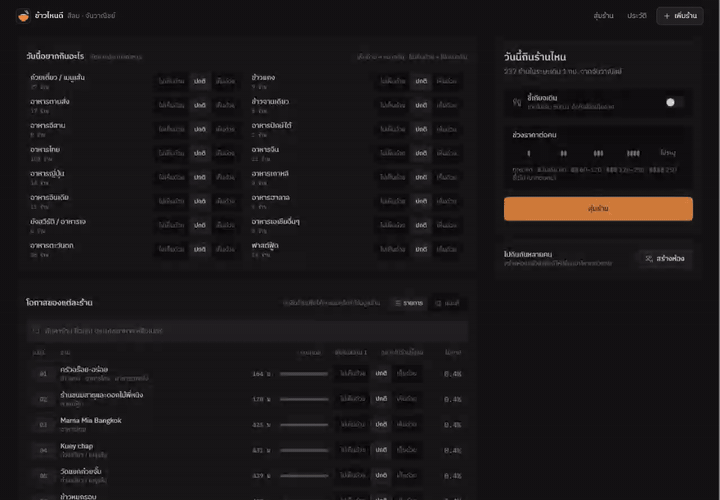
TC-SEARCH-01 P1 ผ่าน
ค้นหาร้าน · ค้นหาด้วยชื่อร้าน แสดงเฉพาะร้านที่ตรง
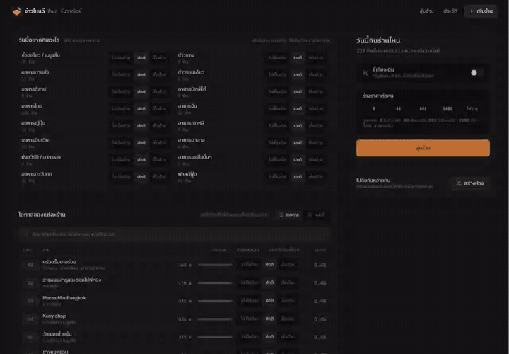
TC-SEARCH-02 P2 ผ่าน
ค้นหาร้าน · ค้นหาด้วยประเภทอาหาร ชื่อเล่น และเบอร์ร้าน
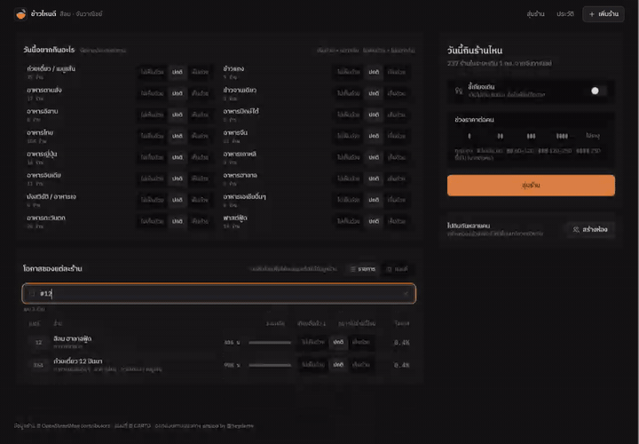
TC-SEARCH-03 P2 ผ่าน
ค้นหาร้าน · ร้านที่ตรงคำค้นแต่ถูกตัวกรองซ่อน มีข้อความบอก
TC-SEARCH-04 P3 ผ่าน
ค้นหาร้าน · ล้างคำค้นด้วยปุ่ม X หรือ Esc กลับมาแสดงตามปกติ
TC-SEARCH-05 P2 ผ่าน
ค้นหาร้าน · ค้นหาบนแผนที่ เหลือเฉพาะหมุดที่ตรง และแผงขวาแสดงผลการค้นหา
TC-VOTE-01 P1 ผ่าน
โหวตประเภทอาหาร · เห็นด้วยกับก๋วยเตี๋ยว / เมนูเส้น ร้านก๋วยเตี๋ยวมีโอกาสมากขึ้น
TC-VOTE-02 P2 ผ่าน
โหวตประเภทอาหาร · ไม่เห็นด้วยกับอาหารตะวันตก ร้านอาหารตะวันตกมีโอกาสน้อยลง
TC-VOTE-03 P3 ผ่าน
โหวตประเภทอาหาร · กลับมาเลือก ปกติ เพื่อยกเลิกโหวต
TC-VOTE-04 P3 ผ่าน
โหวตประเภทอาหาร · โหวตยังอยู่หลังรีโหลด
TC-VOTE-05 P2 ผ่าน
โหวตประเภทอาหาร · ร้านหลายแนวได้ตัวคูณของแนวที่ดีที่สุด
TC-VOTE-06 P1 ผ่าน
โหวตร้าน · เห็นด้วยกับร้าน ร้านนั้นมีโอกาสมากขึ้น
TC-VOTE-07 P2 ผ่าน
โหวตร้าน · ไม่เห็นด้วยกับร้าน แล้วกลับมาเลือก ปกติ
TC-VOTE-08 P2 ผ่าน
โหวตร้าน · โหวตร้านรวมกับโหวตประเภทอาหาร
TC-VOTE-09 P1 ผ่าน
บันทึกโหวต · โหวตแล้วกระดานไม่เรียงใหม่ จนกว่าจะกด บันทึกโหวต
TC-VOTE-10 P2 ผ่าน
บันทึกโหวต · กด ยกเลิก แล้วโหวตกลับเป็นค่าเดิม